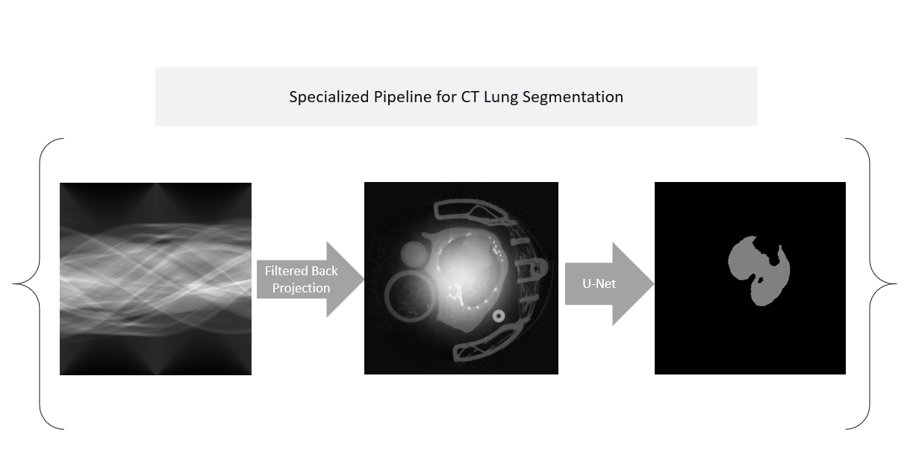

| Paper PDF |

|
Segmentation of medical images is an extremely common task typically performed using various image processing techniques which can be tedious or time-intensive. The U-Net architecture has consistently proven to be highly capable of performing automated medical image segmentation. I present a U-Net implementation for the segmentation of mouse lungs in micro-CT images. Within the network, I explore the possibility of creating a back-projection filter that is specially optimized to improve the segmentation process. This added layer could serve to lay the groundwork for additional filter optimizations for other CT image tasks. Further work should be done to improve the TensorFlow implementation of the back projection operation in my code.
|
|
|
| Paper: |
Code:
|